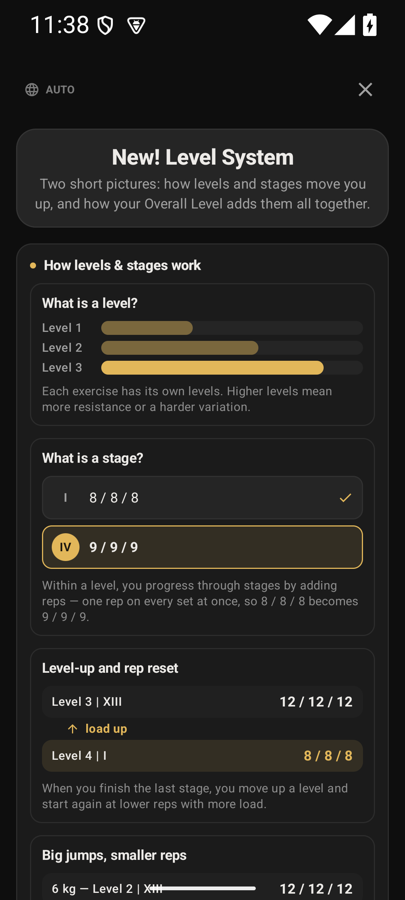
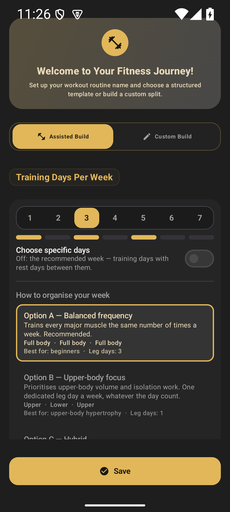
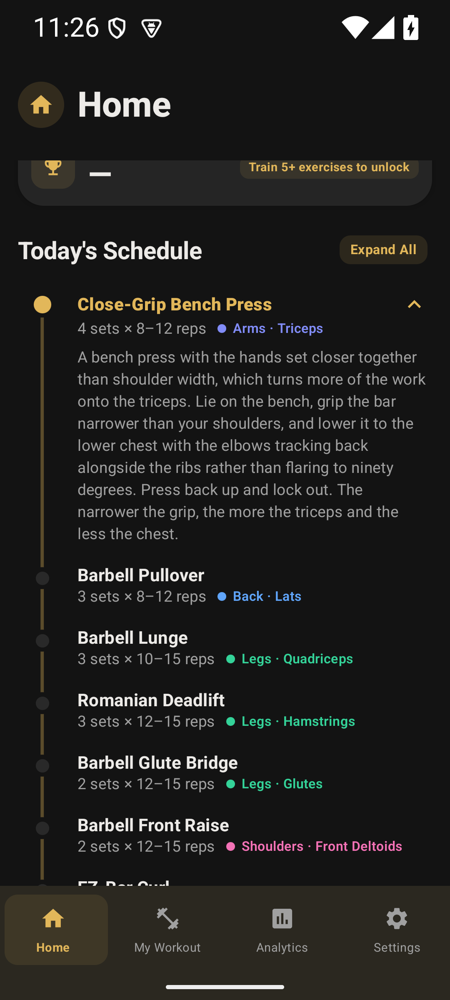
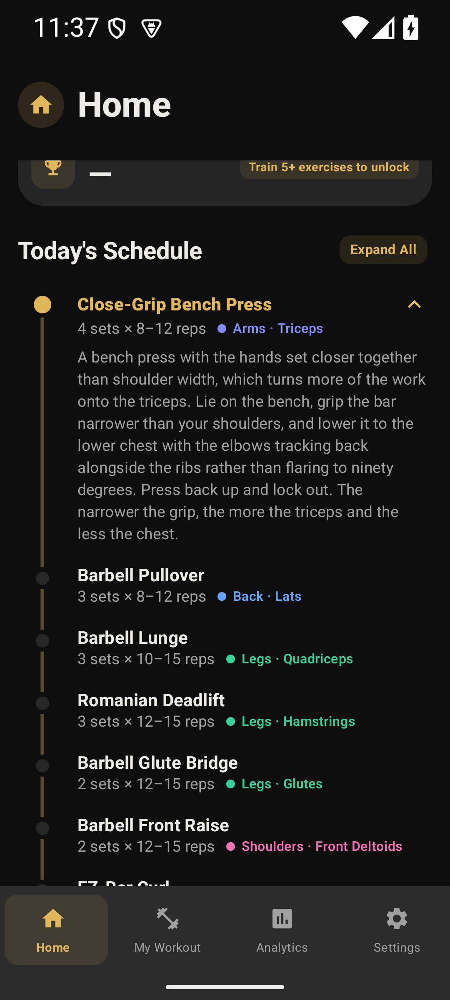
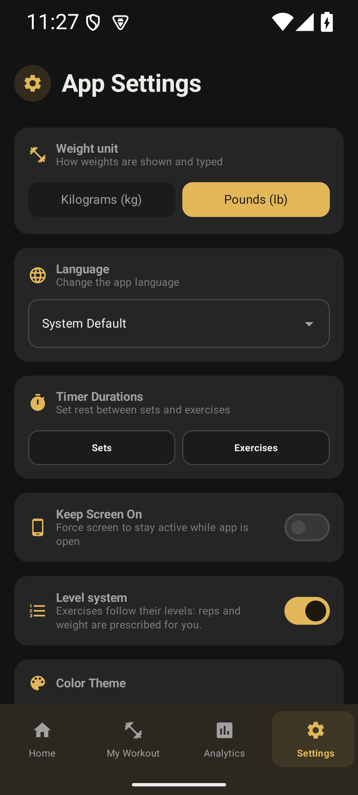
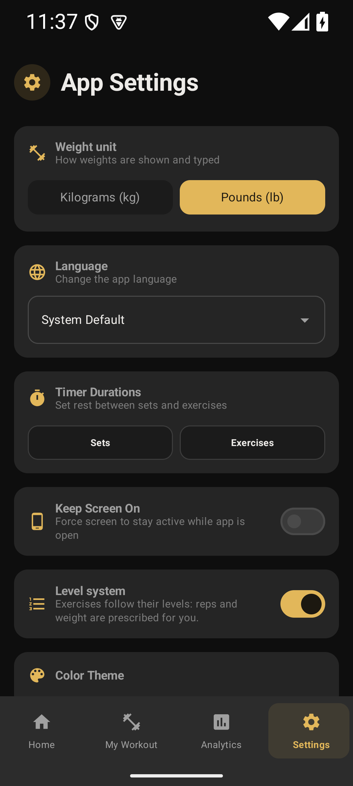
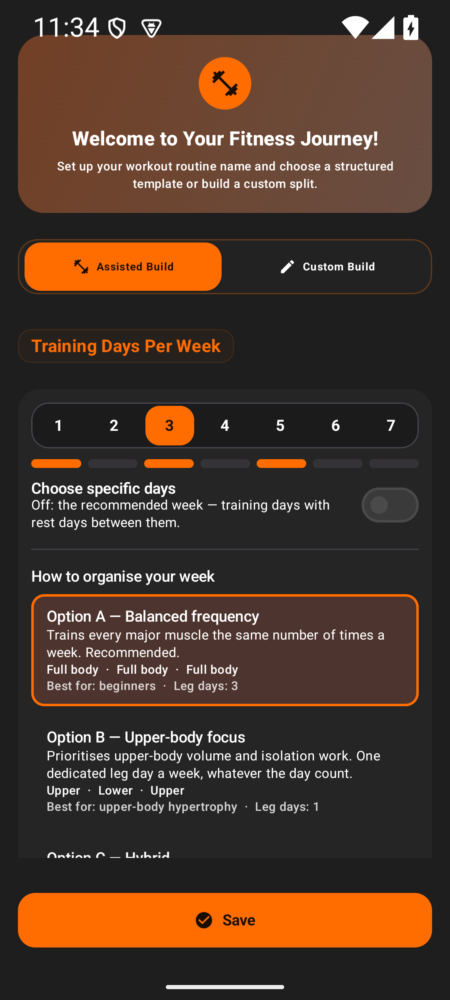

One grey ladder.
No accent in the chrome.
The dark themes and the developer theme now share a single neutral ladder, the cards step up off the canvas far enough to read as a front, and the theme accent has stopped painting the surfaces it never meant to. Every claim below is a pixel count off a Pixel 7a running the debug build.
#2B2820 — a gold wash, because Material composites the accent into
surface at 8.24 % for a 3 dp bar. Dividers were Material's baseline
purple. Neither was ever chosen; both were defaults.
Same greys on Flame, Ocean, Rose, Purple and Developer
The canvas moved one notch deeper and the cards held still, which is what "less dark so it sees as a front" means numerically. No grey carries a hue any more — every channel of every value below is equal.
| Measured, 1080×2400 device capture | Before | After |
|---|---|---|
| Bottom navigation bar, all four tabs | #2B2820 · 9.4 % | #2C2C2C · neutral |
| Dividers & card rims, level guide | #323035 · 1.02 % | #3D3D3D · 0.00 % |
| Coloured pixels, Home (every hue-carrying pixel) | 14.3 % | 4.8 % |
| Coloured pixels, Analytics | 13.7 % | 4.2 % |
| Coloured pixels, Settings | 14.1 % | 4.4 % |
| Level guide (the accent marks rows here on purpose) | 8.4 % | 8.4 % |
| Canvas → card separation (from the constants) | 1.055 : 1 | 1.101 : 1 |
| Selected tab indicator (a state — kept) | #3F3B31 · 1.5 % | #3F3B31 · 1.5 % |
| Accent-coloured chrome, in the navigation bar | #2B2820 | none |
The chrome is the difference you feel first
Both builds were driven to the identical place on the emulator: the level guide, the welcome screen, and Home with its three tabs. Nothing else about the layout moved.






What the build will refuse to let go back
Each rule was proven non-vacuous by breaking the palette on purpose and watching the specific case fail.
One ladder, five themes
Every surface token of every dark theme is compared against Flame's. Switching theme changes the accent and nothing else about the shading. A theme that keeps a private grey fails on the pairing; a palette that collapses two themes fails on the accent set.
The card is a front
Canvas→card must land in 1.08–1.2 : 1. The old 1.055 : 1 fails it; so would a step wide enough to read as a seam.
No hue in any grey
Every neutral surface must have channels within one step of each other. This is the rule that catches a ladder drifting blue or a divider inherited from Material.
Elevation never lifts in the accent
The colour a dark theme lifts towards is its own neutral ink. The accent is reserved for what it can actually signal: the primary action, the current state, a focal number.
Two places the accent is still large — both are taste, not bugs
I stopped at the line where the remaining colour is doing a job. Both numbers below are measured on the screen named; both are one edit away if you want them quieter.
Flame's selected containers
8.0 % of the welcome screen
On the hued dark themes the primaryContainer — every selected chip, day
and option card — is a slab of the theme's own dark hue (#4E342E on Flame,
#243B42 on Ocean, #422230 on Rose). The developer theme's is
already grey, which is why the same screen looks calmer there.
It is a state colour and the hued themes are the ones with an identity to spend.
Matches the developer theme exactly; the selected state leans on the accent label instead of on a filled slab.
Accent-coloured section labels
8.5 % of the welcome screen is the accentThat total is a full-width gold call-to-action (~5 %) plus gold text — section eyebrows, option titles, badges. A stricter reading of "not shown so much" would make the labels neutral and leave the accent to the button, the state and the one number that matters.
It is the scheme's signature and it is how every screen currently says "this section".
Type and spacing carry the hierarchy; the accent gets roughly 3 % more of the screen back.